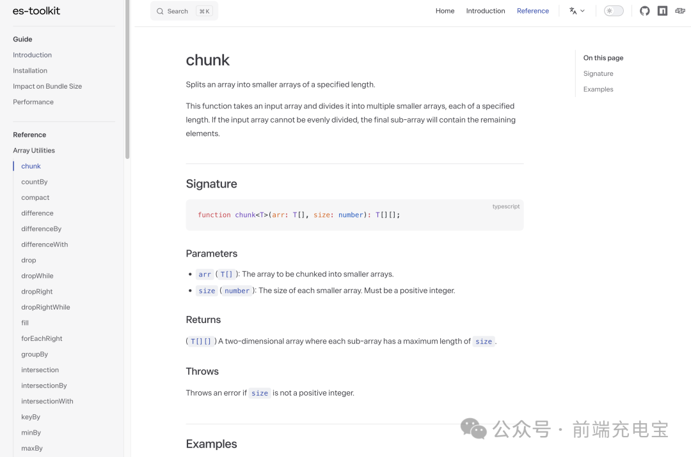

- 01 12 个 JS 动画库
- 02 es-toolkit
- 03 Fuse.js 轻量高效的模糊搜索库
- 04 Intro.js 神奇用户引导库
- 05 js 运算精度丢失，用这个库试试
- 06 Masonry.js 轻松实现瀑布流
- 07 NProgress.js 页面进度条
- 08 OpenCV 前端图片磨皮处理
- 09 Paper.js 一款神奇的 JavaScript 开源矢量图库
- 10 React Email 前端炫酷写邮件
- 11 Reveal.js 一款神奇的 JavaScript 开源演示框架
- 12 Slidev 新一代幻灯片制作工具
- 13 前端 js 动画库
- 14 前端图片压缩 js-image-compressor
- 15 前端实现人类动作捕捉
- 16 前端数据可视化常用工具大盘点
es-toolkit
本文来分享一个最近才开源的工具库：es-toolkit ，它是 Lodash 的现代替代品，相比于 Lodash，它的性能提升了2-3倍，而打包体积却减少了 97%。

es-toolkit 是一个多月前才开源的，目前其 npm 周下载量已经达到了 9000+，非常有潜力。

这个库完全使用 TypeScript 实现，因此提供了简单而强大的类型，并且经过了 100% 的测试，可以确保最大程度的稳健性。它还支持在所有 JavaScript 环境使用，包括 Node.js、Deno、Bun 和浏览器。

es-toolkit 的目标就是实现与 Lodash 的功能基本一致。 目前已经实现了一大部分功能，还在快速增加新功能中。